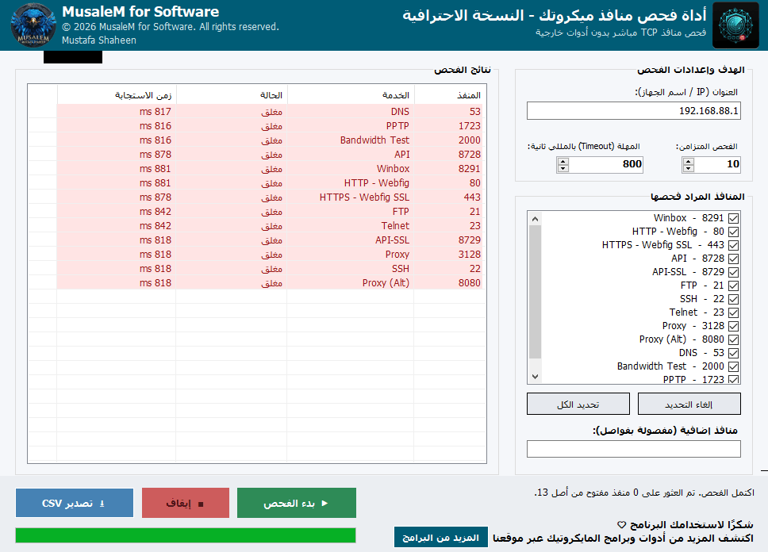

تحقّق من حالة أهم منافذ جهاز الـ RouterOS خلال ثوانٍ، من واجهة عربية بسيطة
برنامج لسطح المكتب (Windows) يفحص منافذ TCP الخاصة بجهاز ميكروتك مباشرة عبر الشبكة، دون الاعتماد على أي أداة خارجية. مفيد للتأكد بسرعة من أن خدمات مثل Winbox أو API أو Webfig تعمل وتستجيب من جهازك، أو لتشخيص سبب تعذّر الاتصال بالراوتر.
